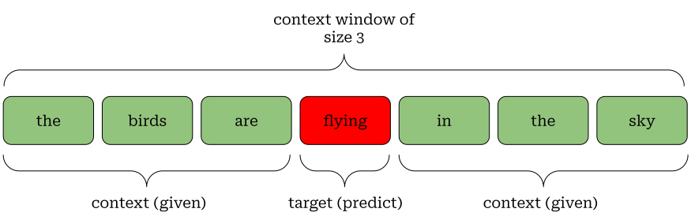
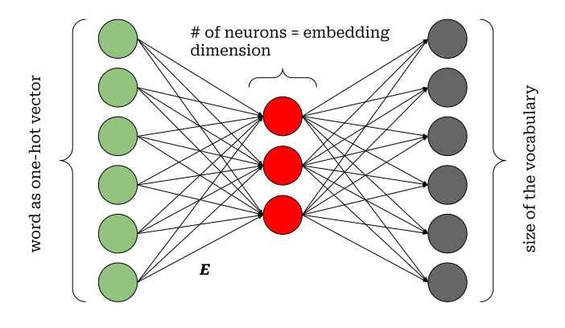

Introduction
A computer algorithm is nothing but a sequence of carefully chosen steps having a specific goal, it needs some input data to work on and produce some results. Achieving this goal depends on many many factors and representing the input data to the algorithm is one of them.
Neural networks, being some complex algorithms, are capable of performing many useful tasks with human languages when represented both as texts and sound waves. Some useful examples can be human sentiment detection from written text, language translation, image captioning etc.
In all these cases, one interesting thing is to know how such a massive amount of textual data are supplied to a network so that it understands the inner meaning just like a human.
In this post I will focus on a couple of methods to represent a textual dataset to a network, collectively known as word2vec.
Some important terminologies
Let us understand some basic yet important terminologies that are used while working with textual data. For the sake of convenience, we will consider English as the language to understand various concepts in this post, but the same terminologies are applicable for other languages too.
Corpus: A corpus is a collection of textual data. It typically refers to a group of sentences or paragraphs. For example, the messages we send to someone in any messaging platform can be considered together to form a corpus.
Token: A token is the most granular part of a corpus. Depending on the requirement, it can be a single character, a single word or even a single sentence. The process of creating tokens out of a corpus is called tokenization.
Vocabulary: A vocabulary is the set of unique (non-repetitive) tokens. Technically, it is that set which generates the entire corpus.
An example will help here to understand it better.
Note that, the word the has appeared twice in the corpus and it is considered only once in the vocabulary.
Converting texts to numbers
Converting texts to numbers are required because a computer can only handle numbers, although typically not in the form we give. It converts numbers (decimal numbers) to the binary form which is basically a sequence of zeros and ones, before performing any task.
Since the beginning of development of modern computers, we had something called ASCII table. This table has numeric representation of each character in English including numbers and some special characters.
Better ways to represent texts
ASCII codes are certainly useful to represent characters in the computers’ memory. But it does not fulfill the purpose while developing modern intelligent applications like a language translator.
In natural language processing, tokens are usually represented by numerical arrays or vectors. Let us understand the various ways to create such vectors.
Before proceeding further, let us consider a new corpus (a group of sentences quoted by Shakuntala Devi) with a word level tokenization as below:
corpus = [
'without mathematics, there’s nothing you can do',
'everything around you is mathematics',
'everything around you is number'
]
word_level_tokens = [
"without", "mathematics", "there's",
"nothing", "you", "can", "do",
"everything", "around", "you", "is",
"mathematics", "everything", "around",
"you", "is", "number"
]
sorted_vocabulary = [
'around',
'can',
'do',
'everything',
'is',
'mathematics',
'nothing',
'number',
"there's",
'without',
'you'
]
vocabulary_size = 11One-hot vector
This is the simplest way to convert tokens into a vector. One-hot vector, for a token, is a vector of dimension vocabulary_size (often denoted by |V|). In this vector, all the elements are 0’s except a single 1. The index that holds the 1 is called hot index and it is basically the index of the token in the vocabulary.
Example:
As you can imagine, for a large corpus, one-hot vectors are very large dimensional sparse vectors.
Also, if we represent any text using one-hot vectors (technically a matrix made of one-hot vectors), then basically we are not considering word-word relationship or similarity.
Words (rather tokens) are considered independent chunks of the text for this kind of setup, but it is something that we do not like. Any language maintains some contexts through word-word relationships and those are completely ignored by one-hot representation.
If we try to measure the similarity between two words with the help of one-hot representation, we will always get zero, but that does not mean the words are very close on the semantic space.
Embedding vector
As you have observed, one-hot vectors do not consider context, so we definitely need something meaningful for representing the tokens mathematically.
In the world of NLP, the term embedding usually refers to a dense vector (a vector that has most of its components as non-zero real numbers) that represents a token. As you know, depending on the problem, a token can be a character, a word or even a full sentence and an embedding vector is created to represent it accordingly.
Let us try to understand the way of expressing the meaning of words mathematically.

In the above table, we have four different words which are ‘Chocolate’, ‘Cat’, ‘Dog’ and ‘Ship’. For each of these words we have six randomly chosen features or characteristics.
Each of the features can have values in between zero and one. If the value for a feature is very close to zero, it indicates that the feature is not very applicable to the word. Similarly, having a value closer to one indicates that the feature is quite applicable to the word.
As an example, the feature ‘can_play_with’ is not at all relevant to the word ‘Ship’, that’s why the score is 0.0.
Interesting thing to note here is that the words ‘Cat’ and ‘Dog’ have very similar scores for all the features. This makes them very similar words and in reality, they do have many common characteristics too.
If we consider a 6D vector space (also called semantic space) based on these features, then obviously, ‘Cat’ and ‘Dog’ are going to be very close to each other over there. However, the words ‘Chocolate’ and ‘Ship’ will be far away.
This is how, by using vectors, we can mathematically express the meaning of words to a computer. These vectors are known as embedding vectors.
Although embedding vectors are very helpful, they are very difficult to design. We do not really know how to design the features.
Learning word embeddings
Neural networks, as versatile tools, come here to solve the problem. Here, we will learn an algorithm, called word2vec that helps us in getting embedding vectors by using a shallow (not very deep) neural network trained on some texts.
Before delving into the algorithm, we must understand one simple yet very useful application of one-hot vector and matrix multiplication.
Suppose, we have an embedding matrix (made of stacking the embedding vectors together) \mathbf{E}^T_{4 \times 6} just like the above figure.
If we consider our vocabulary as ['Cat', 'Dog', 'Chocolate', 'Ship'], then one-hot vector for the word ‘Dog’ will be \vec{v}_{Dog} = \left(0, 1, 0, 0\right).
Now, if we multiply \vec{v}_{Dog} and \mathbf{E}^T, then the result of \vec{v}_{Dog} \cdot \mathbf{E}^T gives us the second row of \mathbf{E}^T which is nothing but the embedding vector of the word ‘Dog’.
Therefore, we can use an on-hot vector and extract the corresponding embedding vector from the embedding matrix. This is why embedding matrices are also called lookup tables.
If we consider a word in a sentence, then it is very obvious to note that the surrounding words have some relationships with it.
As an example, if we have a sentence like ‘the dog is swimming in the pond’, then the words swimming and pond are related.
The word swimming is the context here, if we know this, we can anticipate other words similar to pond as well just by following the context.
Continuous bag of words (CBOW) model
Consider an incompelte sentence: the birds are _____ in the sky. By looking at the words the, birds, are, on, the, sky, can we imagine the missing word? Ofcourse, it must be either flying or very similar to it.
This is exactly what happens when we use the CBOW approach. CBOW looks at the context and tries to figure out the target word as shown below,

In reality, this context window moves towards the right till the time we have covered all possible contexts and targets starting from the beginning of our text data to the end. Don’t worry, the code example, given below, will make this easier to understand.
We will now consider a sample text and prepare the training data using CBOW approach for a shallow feed-forward network. It’s going to have a single hidden layer. The number of neurons in the hidden layer is controlled by the dimension of the embedding vector.
A pseudo network architecture is shown below,

In this network, each word in the context is fed to the network as an one-hot vector. Having the input vector, the network does some computations to form the hidden layer and eventually tries to predict the target word. The source code depicting the network architecture is given below.
import torch
import torch.nn as nn
import torch.nn.functional as F
class Word2Vec(nn.Module):
def __init__(self, vocab_size, embedding_dim):
super(Word2Vec, self).__init__()
self.vocab_size = vocab_size
self.embedding_dim = embedding_dim
# define weight matrices
self.weight_i2h = nn.Parameter(torch.randn(
(self.embedding_dim, self.vocab_size),
dtype=torch.float
))
self.weight_h2o = nn.Parameter(torch.randn(
(self.vocab_size, self.embedding_dim),
dtype=torch.float
))
self.params = nn.ParameterList(
[
self.weight_i2h,
self.weight_h2o
]
)
def forward(self, input):
# create onehot vector of the input
input_onehot = F.one_hot(input, self.vocab_size)
# compute hidden layer
hidden = F.relu(
torch.matmul(
self.weight_i2h,
input_onehot.view(self.vocab_size, -1).float()
)
)
# compute output
output = torch.matmul(
self.weight_h2o,
hidden
)
# compute log softmax
log_probs = F.log_softmax(output.view(1, -1), dim=1)
return log_probsNote the output dimension of the network. It is exactly equal to the size of the vocabulary as there are that many number of possibilities while predicting the target word.
So, essentially, this whole process is a multi-class classification process.
It is strange to know that prediction is not what we actually focus on here. We are interested in the weight matrix \mathbf{E}. This is our embedding matrix filled with optimally trained parameters.
\mathbf{E} has the dimension dim(\text{embedding vector}) \times dim(\text{one-hot vector}).
Hence, \vec{v}_{word_j} \cdot \mathbf{E}^T just gives us the embedding vector for word_j.
Let us now see how the training data is prepared for the CBOW network from a sample text.
# imports
import re
from pprint import pprint
raw_text = """We are about to study the idea of a computational process.
Computational processes are abstract beings that inhabit computers.
As they evolve, processes manipulate other abstract things called data.
The evolution of a process is directed by a pattern of rules
called a program. People create programs to direct processes. In effect,
we conjure the spirits of the computer with our spells."""
# clean raw text
cleaned_text = re.sub(r"[\.\,\-]", " ", raw_text).lower().replace('\n',"")
data = cleaned_text.lower().split();
# source: https://pytorch.org/tutorials/beginner/nlp/word_embeddings_tutorial.htmlWe’ll now prepare the training data using the code below,
# specify context size and embedding dimension
CONTEXT_SIZE = 2 # two words on the left and two words on the right
EMBEDDING_DIM = 10
# create vocabulary
sorted_vocab = sorted(list(set(data)))
# prepare dataset for cbow network
cbow_data = []
# define start and end indices
start_ix = CONTEXT_SIZE; end_ix = len(data) - CONTEXT_SIZE
for i in range(start_ix, end_ix):
target = data[i]
for j in range((i - CONTEXT_SIZE), (i + CONTEXT_SIZE + 1)):
if j != i:
cbow_data.append((data[j], target))and here is the partial training data as the output,
Skip-gram model
Skip gram, being another variation of word2vec, does the exact opposite of what CBOW does.
It tries to predict the context or surrounding words by looking at a specific word in a sentence as shown below,

Here is the code example that helps to prepare the training data based on the same raw text,
# prepare dataset for cbow network
skip_gram_data = []
# define start and end indices
start_ix = CONTEXT_SIZE; end_ix = len(data) - CONTEXT_SIZE
for i in range(start_ix, end_ix):
target = data[i]
for j in range((i - CONTEXT_SIZE), (i + CONTEXT_SIZE + 1)):
if j != i:
skip_gram_data.append((target, data[j]))and below is the partial training data as output,
CBOW and Skip-Gram training data look very similar, the only difference is in the usage of target and context words in the training data.
The source code for training such a network is given in this colab notebook. It may not be optimised, but it will give you enough confidence to understand the whole story behind word2vec.
Pre-trained embedding models
To get very accurate vector representations of words, we need to train such networks on very large corpus with a much larger embedding dimension.
Researchers have come up with pre-trained embedding models which are trained on massive amounts of text such as the wikipedia. These models are typically of 300 to 600 dimensional and are ready to be consumed.
The only problem with pre-trained models is the training data is very generic. In case someone needs to work on a specific domain, then such a network should be trained on domain specific corpus.
Conclusion
So we are now at the end of the story. Thanks for having some time reading this article. I hope you have enjoyed it and most probably have got the idea and intuition behind the algorithm as well.
The word2vec is a decade old method now, but I believe it has inspired many other developments which have drastically improved the quality of embeddings.
I do wish to research more on the advanced topics in this regard and bring them to you in the form of blog posts in near future.
If you have any comments on this post, please feel free to leave them below. Thank you.